1. Copias de seguridad en Ubuntu
1.Para empezar a realizar las copias en Ubuntu primero necesitaremos saber cuál va a ser la carpeta de las que se harán las copias y la carpetas donde se guardarán, estas serán la carpeta “Fase2” que es donde se encuentran todos los archivos y las copias se guardarán en “backups”:
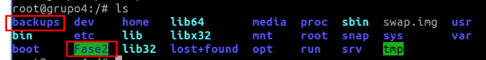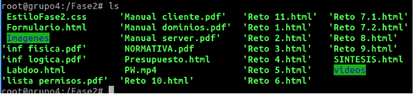
En vez de hacer copias de seguridad de los archivos de usuario decidimos realizarlas sobre un carpeta de prueba con los archivos de la página web.
2. Para realizar las copias nos dirigiremos a “sudo crontab -e” y escribiremos un comando cron y tar para que se realicen copias tanto mensuales como semestrales.
3.Para hacer las copias mensuales configuraremos el comando tal que así: “00 00 1 1-12 * cd /backups && tar -cvzf Fase2mensual.tgz -g snapshot.snar /Fase2” Lo que quiere decir este comando es que a las 00:00 del 1 de cada mes de cualquier año se dirigirá a la carpeta “backups” y creará una copia llamada “Fase2mensual” y realizará una snapshot de la carpeta “Fase2”
4.Para hacer las copias semestrales configuraremos el comando tal que así: “00 00 1 6,12 * cd /backups && tar -cvzf Fase2mensual.tgz -g snapshot.snar /Fase2” Lo que quiere decir este comando es que a las 00:00 del 1 de los meses Junio y Diciembre de cualquier año se dirigirá a la carpeta “backups” y creará una copia llamada “Fase2semestral” y realizará un snapshot de la carpeta “Fase2”
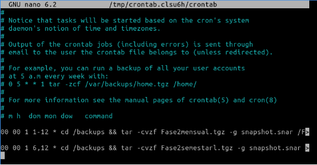2. Copias de seguridad en Windows
1. Para poder realizar la copia de seguridad en windows tal y como he hecho a continuación necesitamos Cobian backup 11.
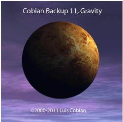
2. Cuando ya hemos descargado la aplicación nos aparecerá la siguiente pantalla, en la cual escogeremos el idioma que queremos.
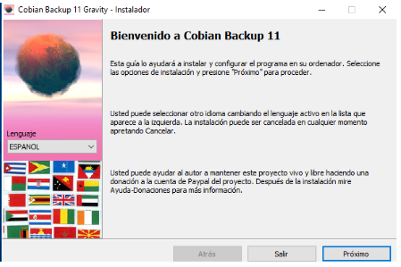
3. Cuando hemos pasado a la siguiente ventana tendremos que aceptar las condiciones de políticas de privacidad para poder continuar con la instalación y la programación de las copias.
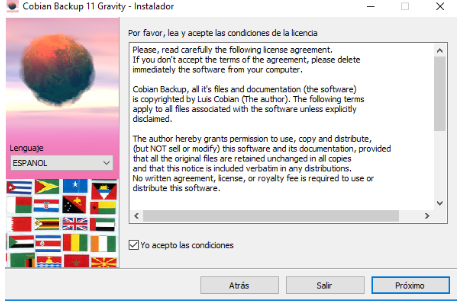
4. Ahora seguidamente escogeremos donde queremos instalarlo.
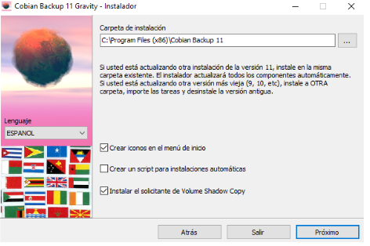
5. Cuando ya hemos escogido donde queremos tener cobian backup haremos click en “como un servicio” y también usaremos la cuenta del sistema local.
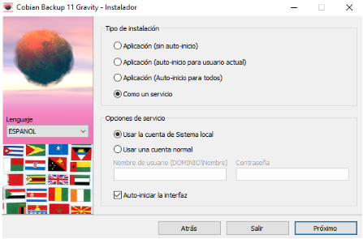
6. Ya configurado estos apartados podremos darle a instalar para que proceda.
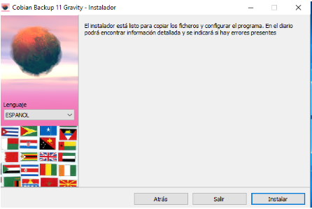
7. Cuando ya está instalado lo que tendremos que hacer es iniciar la aplicación, seguidamente buscaremos el siguiente icono(añadir tarea) para empezar con las copias de seguridad.
8. Ahora podemos añadir el nombre que queramos a la tarea y escoger el tipo de respaldo, en nuestro caso he puesto copia mensual para poder identificar.
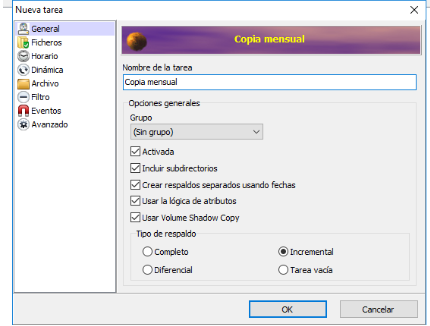
9. A continuación haremos click en ficheros para poder seleccionar los ficheros que queremos copiar y donde queremos que haga la copia.
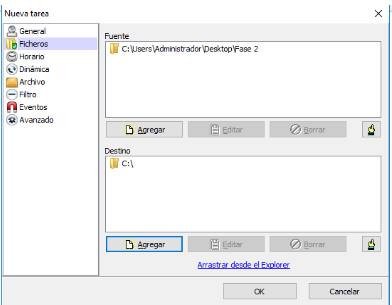
10. En esta ventana podemos escoger cada cuanto queremos que haga la copia, en nuestro enunciado tenemos que hacer la copia mensual y semestral, pero en esta aplicación no hay una manera para poder hacer la copia semestral.
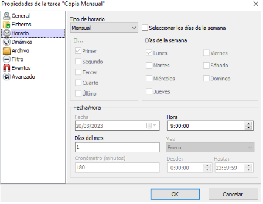
11. Cuando hemos hecho todos estos pasos nos aparecerá la copia en la lista de tareas un la cual podemos ver todas las características que tiene esta tarea.
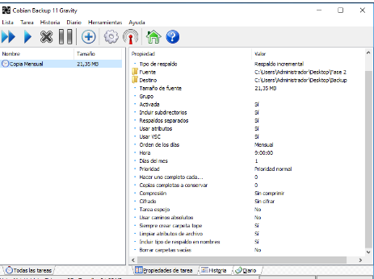
3. Contenido subido en la nube.
1. En la lista de contenidos del reto nos pedía elegir un sitio en la nube para poder subir los archivos con una estructura de carpetas clara. Hemos decidido realizarlo en Google Drive. La estructura de carpetas sería tal que:
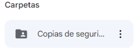 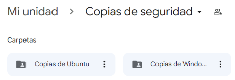
2. Dentro de las carpetas de Ubuntu y Windows tenemos que poner las carpetas con las copias de seguridad realizadas en cada servidor:
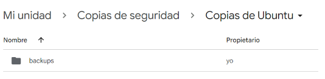 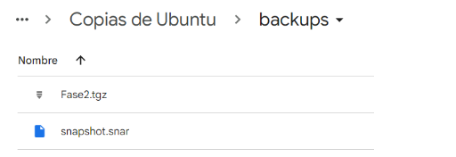
3. Además de las copias nos pedían un documento en el que se expliquen el porqué de este contenido web, (en nuestro caso Google Drive) y con un manual de la configuración de los permisos de usuario, pero como en las copias de seguridad las realizamos con los archivos de la página web hemos hecho el manual sobre como descomprimir estos archivos para poder ver la página. Este documento además lo añadimos dentro de la estructura de carpetas:
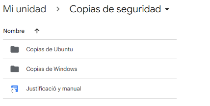
4. Por último nos quedaría compartir la estructura de carpetas con los miembros del grupo con permisos de edición y con los profesores del proyecto con permisos de lectura:
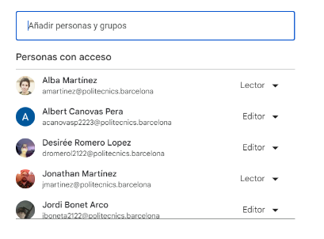